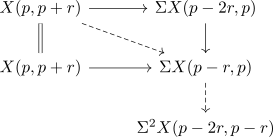

Z-complex induces spectral sequence
Proposition
Let $\mathcal{C}$ be a stable category equipped with a t-structure and $\pi_n(-)$ the n-th homotopy object functor of a t-structure. Then there exists a $\mathcal{C}^{\heartsuit}$ valued spectral sequence given by
- $E_{r}^p,q} = \mathrm{im}(\pi_{p+q}(X(p-r,p)) \rightarrow \pi_{p+q}(X(p-1,p+r-1)))$
- differentials $d_r: E_r^{p,q} \rightarrow E_r^{p-r,q+r-1}$ uniquely determined by
where $\partial$ is the boundray map of the long exact sequence for a Z-complex
Proof
informal construction of the differential, for $\mathrm{RMod}$
map an element in $E_r^{p,q}$ to $\pi_{p+q-1}(X(p-r-1,p-1))$ and observe that it restricts to $E_r^{p-r,q+r-1}$
differential is zero
Note that $E_r^{p,q} \hookrightarrow \pi_{p+q}(X(p-1,p+r-1))$ is a monomorphism. follows as
Then we have the cofiber sequences
and
Note that there exists a diagram
which consists of bifiber sequences as rows/column.
Now we may apply the suspension and get

where the dashed maps are the desired differentials.
But the right vertical maps are still cofibers, so in particular they compose to the zero morphism.
isomorphism of homology
some zero
We want to show that the maps
are the zero maps We show this for the first map, the other claim follows from a dual argument.
For that consider